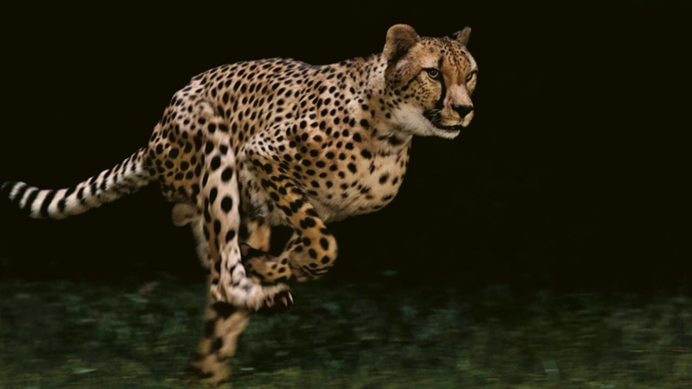
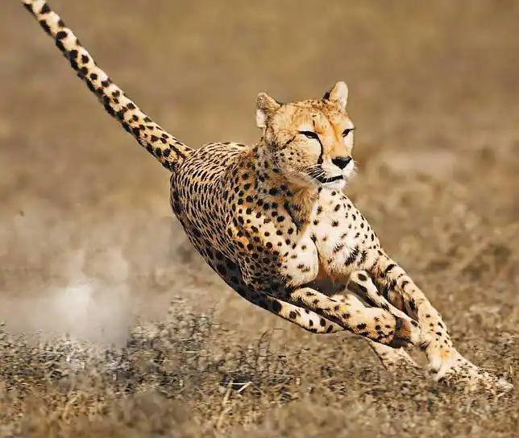
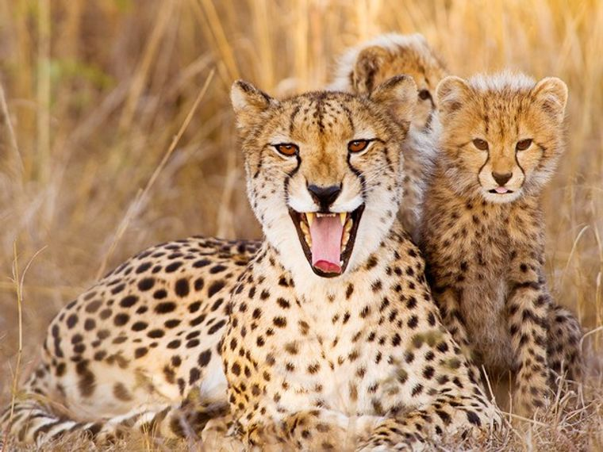
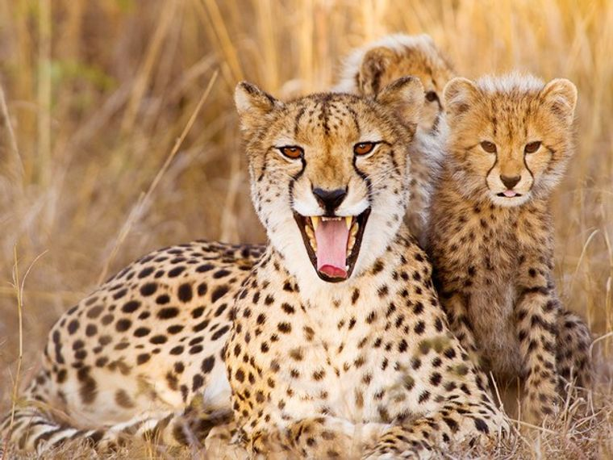

llegando a desplazarse a más de 100km/h en carreras largas, una velocidad que puede alcanzar en tan solo 3 segundos. Es uno de los cazadores más eficientes gracias a un excelente sentido de la vista y su gran agilidad mediante la cual pueden hacer rápidos y repentinos giros en la persecución de su presa. Se alimenta de ñus, cebras, antílopes y sus favoritas, las gacelas.  Este felino es un gran depredador diurno que se vale del movimiento furtivo y sigiloso que le caracteriza y de una distintivo patrón de manchas en su piel que le permite camuflarse fácilmente entre las hierbas altas y secas donde aguarda agazapado el momento en el que lanzarse sobre su víctima. Se pueden distinguir fácilmente de los leopardos por las líneas negras que salen de sus ojos –como lágrimas– y descienden hacia a bajo enmarcando el hocico.  Las hembras suelen dar a luz a camadas de tres cachorros y generalmente viven con ellos durante periodos que transcurren entre el año medio y los dos años. Los cachorros jóvenes pasan su primer año aprendiendo de su madre y practicando técnicas de caza a través de juegos- Los machos suelen ser solitarios o vivir en grupos pequeños, a menudo con sus compañeros de camada. La mayor parte de los guepardos que quedan en la actualidad viven en el este y sudoeste de África, donde habitan los 12.000 ejemplares que se calcula que quedan. Viven aproximadamente 12 años, algunos pueden llegar a pesar 60 kilos y miden entre 1,10 y 1,40 metros, mientras que la cola tiene una longitud de casi 80 centímetros y constituye una herramienta clave para su equilibrio y agilidad.
 
